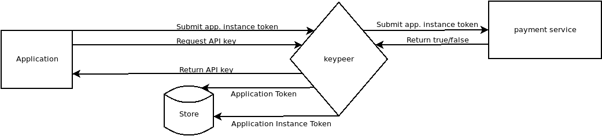

Introduction
Many applications today depend on data and services which they do not directly control. Some of this data are freely available like that of the Wikipedia foundation or the OpenStreetMap projects. While these data are available, it has to be processed and delivered to the users in a usable form. Due to these processing and distribution costs, while small per user, it becomes expensive for individual software developers to use unless they have some way to create a revenue stream. Which is frequently impossible for free and open source software.
keypeer enables users to support third party service use in FOSS (free and open source software) applications and to benefit from those services that they might individually not be able to access without sacrificing privacy by having to use those services directly. Users often also lack simple and transparent ways to support a project financially while using the software. Developers often simply can't fund the use of third party data or services. Keypeer connects them to users who collectively can supply the financial support.
The keypeer project provides an API key intermediary service. It aims to serve the following goals:
- give user communities access to services that would otherwise require proprietary software
- provide access to paid services for users of free and open source software
- provide a service / application agnostic api to act as an intermediary
- minimize the storing and transmission of personal data
A birds eye view of the process.

Example API(s)
As an example, many map services require significant data processing and data serving expenses. Although the OpenStreetMap dataset is freely available, it has to be processed into specific database formats to be served as map tiles and to provide search and routing. Multiple providers exist that are focused in providing privacy respecting service, but the mechanism used for payment of the services is through application API keys. Access to these API key would require the application developer to pay for the service provided to end users. While it is a viable financial model for proprietary applications, FOSS applications lack a mechanism to enable users to directly pay for the service. Keypeer would enable users to contribute a share of the cost of API calls they make.
Other examples of types of services which require keys or proprietary licenses:
- transportation authorities, which require use of their apps or limit the use of the apis
- news service providers like Reuters and AP or the aggregator newsapi.org. These charge upward of 450 USD a month.
- text-to-speech, speech-to-text services
Social Goals
One of the unique aspects of the keypeer project is that it is not limited to one type of software or user community. Many kinds of software use remote APIs and both user communities of Desktop and Mobile operating systems, even embedded systems in the IOT space can benefit from the use of a keypeer. And so, one goal of the keypeer project is to network with different projects and apply network effects to aid in financial support in a commons. Some API keys, and hence funding, can be supported by groups which otherwise don't have much in common. The mapping example above extends across users of desktop applications and mobile phone apps including multiple operating systems.
Another of the goals keypeer has is to create a transparent means for users and developers to observe the financial aspects of the operation of keypeer and the use of the API keys themselves.
keypeer will not accept payment for services as in a traditional subscription model but rather allocate means managed independently. Management of the payments will be done by a not-for-profit association using a transparent intermediary.
Some examples of transparent financial intermediaries: Open Collective. Commons Conservancy Transnational Giving
Technical Implementation
The technical part consists of a web service (REST API), a freely accessible interface that developers can use for accessing services API keys through keypeer.
Access to API keys will be managed by a ZKP (zero knowledge proof) approach. When a user makes a donation, keypeer produces a 'donation certificate'. Whenever the user requires an API key, they can prove payment with this certificate using a ZK proof which does not reveeal their identity. Discussions with interested parties in the community lead to considering the use of Circuittree, a Zero-Knowledge reasoner. Circuitree IEEE paper
Protecting keys is a challenging problem. We propose to use something like fully homomorphic encryption OpenFHE for storage of user and third party key material on servers that must remain secret.
The service will be prototyped in the Python and C++ languages, most probably with a framework like Flask and Werkzeug for the api endpoints themselves. Client side code will initially be prototyped in JavaScript and C++.
Financial Development
We wish to follow a multi-pronged funding strategy. Obviously, we wish to enable individual users to contribute on a use base. We also intend to do traditional recurring funding drives. There should, however, also be a possibility to enlist corporate support. Given that keypeer can simplify and secure use of high values secrets which can be of great use within an organization that subscribes to multiple services, we anticipate being able to enlist corporate donors/sponsors. As a first step, we will approach companies like Mapbox and MapTiler to gauge interest.
Workflows
Workflow is described separately